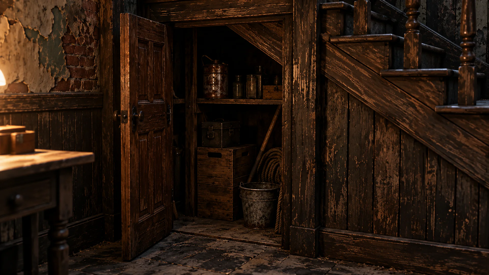
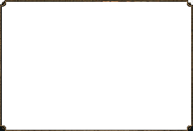
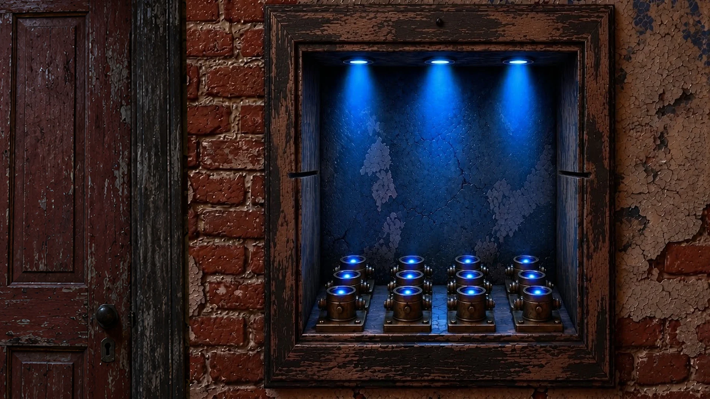
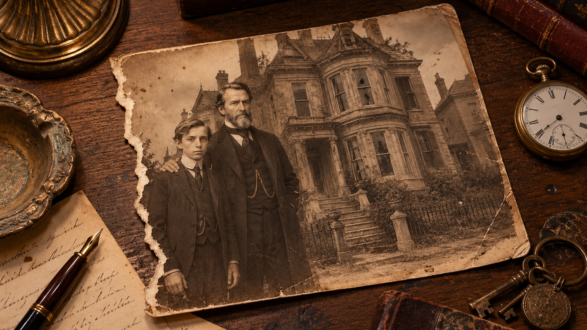
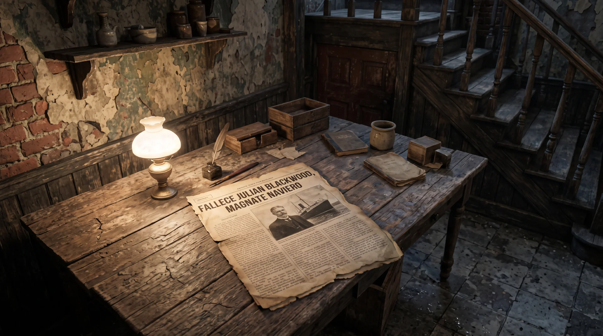
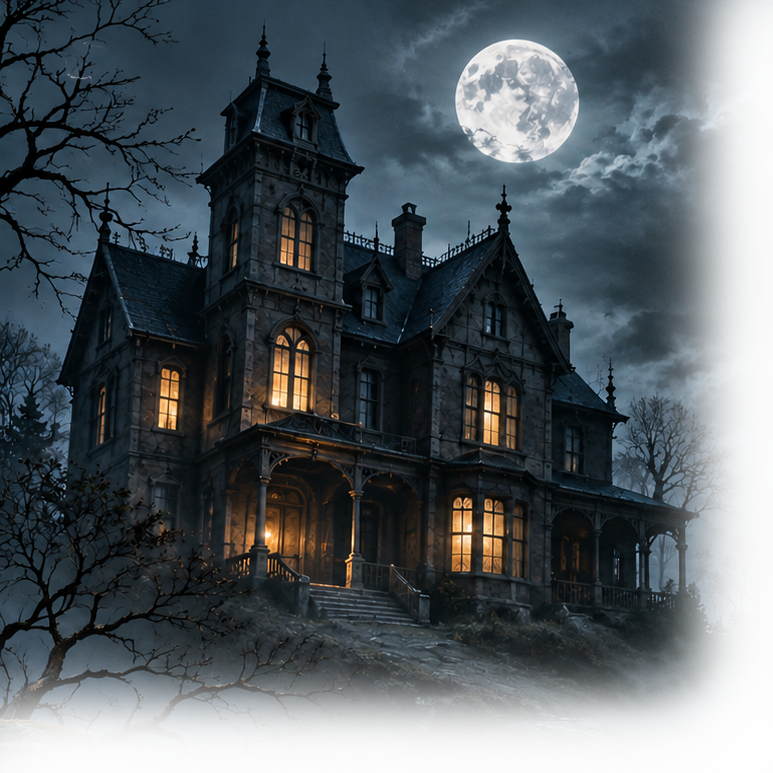
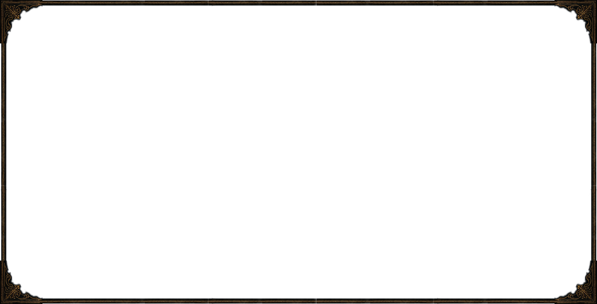
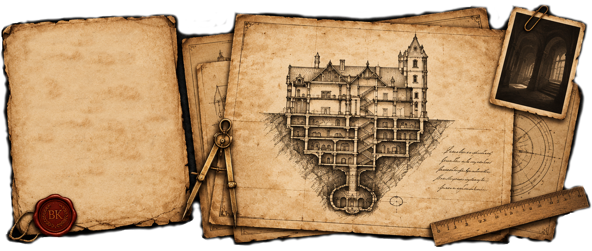

Explora
Descubre las estancias de una mansión olvidada.

Una aventura de horror gótico point-and-click
Una mansión victoriana aislada. Documentos olvidados. Secretos que deberían permanecer enterrados.

Descubre las estancias de una mansión olvidada.


Enfréntate a rompecabezas complejos y mecanismos ingeniosos.

Encuentra pistas ocultas y reconstruye el pasado.

Desentraña los oscuros secretos de la familia Blackwood.
THE ARCHIVIST
A letter from Clara, written the night before her arrival at Blackwood Keep, where a routine assignment would soon uncover a far more unsettling mystery.
Arkham, Massachusetts
October 14th, 1931
Hotel Miskatonic
My dear Elena,
I arrived in Arkham this afternoon, and I am writing to you from my room at the hotel before I lose the little courage I have left to unpack my things.
Tomorrow morning I am to travel to Blackwood Keep. The assignment is rather more interesting than I had expected. Mr. Blackwood has engaged me to catalogue and organise a private collection of books, papers and other records kept at the estate.
You would laugh at the stories I have already heard. The people here speak of the house as though it were some unfortunate relative. A man at the station insisted that the house has stood empty for years, although he could not explain why he had seen lights in the windows only last winter. Another story concerned the old servants’ quarters. Apparently, some rooms were sealed many years ago and have never been opened again.
When I mentioned that I would be staying at the estate for several days, the woman at the hotel asked me, quite seriously, whether I had been told about the bells. I had not. She would say nothing more.
So there you have it. Tomorrow I shall see Blackwood Keep for myself, and perhaps discover that the great mystery of the house is nothing more than a collection of provincial superstitions.
I promise to write again once I have arrived.
With affection,

Blackwood Keep is a narrative escape room game set in a mysterious Victorian mansion on the Massachusetts coast in 1931.
Explore richly detailed environments, examine documents, solve intricate puzzles and uncover the secrets of the Blackwood family in a story inspired by classic gothic horror and Lovecraftian mystery.
Play the first chapter for free and begin your investigation at Blackwood Keep.


Blackwood Keep desafía algo más que la lógica. Hay estancias que jamás debieron estar ahí. Pasillos que se prolongan mucho más allá de los límites de la casa. Puertas que conducen a espacios que no pueden existir entre cuatro paredes.
Los planos parecen precisos. Las medidas son coherentes. Las líneas, cuidadosamente trazadas.
Y, sin embargo, la casa no obedece a ninguna de ellas. Quizá Euclides habría encontrado poco que hacer aquí. Sus reglas fueron escritas para describir el espacio que conocemos.
Pero Blackwood Keep parece pertenecer a otro.
A glimpse into the house and its secrets